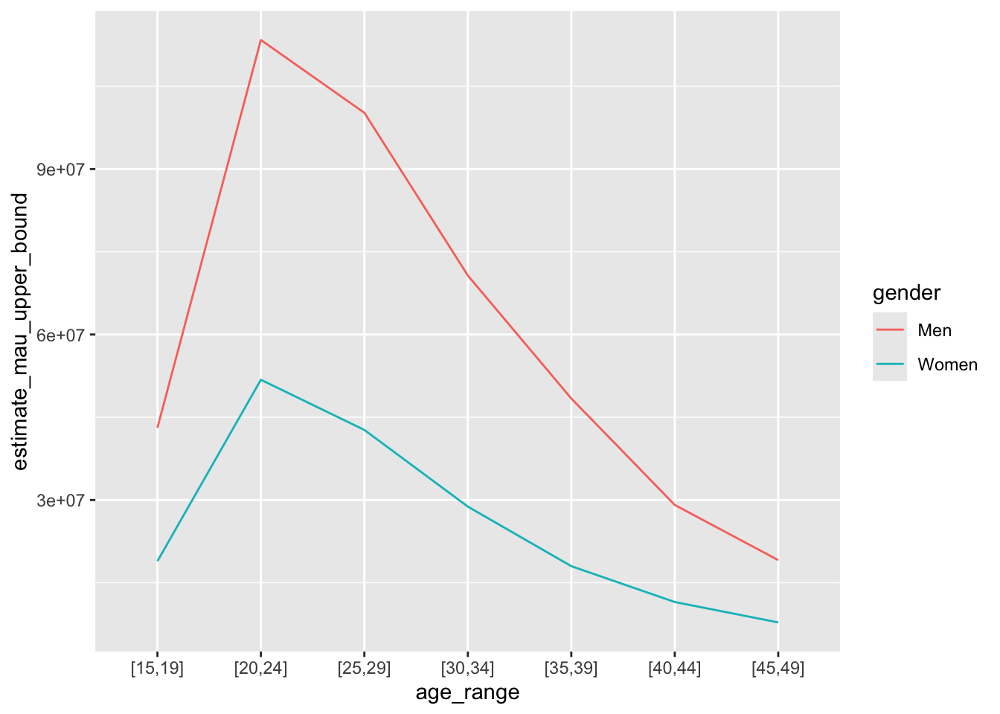
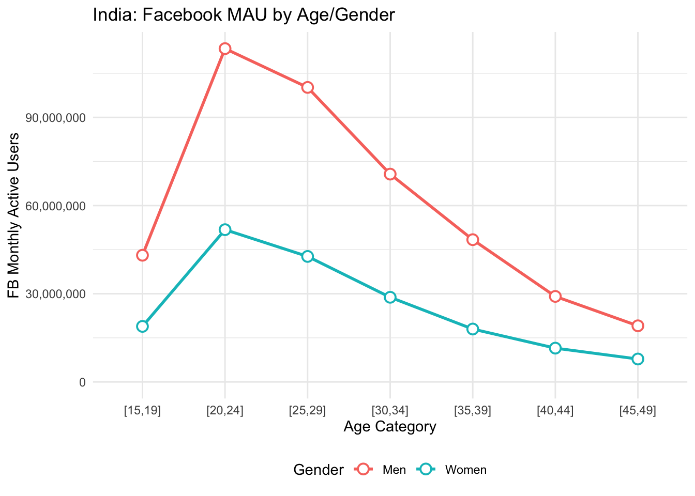

Tutorial 1: Using Facebook Marketing API to Obtain Monthly Active User Counts
Author
Jiaxuan Li, Casey Breen, Ridhi Kashyap
Published
July 3, 2025
Using Facebook Marketing API to Obtain Monthly Active User Counts
In this part of tutorial, we’ll explore how to use an API (Application Programming Interface) to obtain monthly active user (MAU) counts for Facebook (FB) by geography, gender, and age. These data have been used in our Digital Gender Gap project and in other projects to study topics such as migration. For example:
Fatehkia, Masoomali, Ridhi Kashyap, and Ingmar Weber. 2018. ‘Using Facebook Ad Data to Track the Global Digital Gender Gap’. World Development 107:189–209. doi: 10.1016/j.worlddev.2018.03.007.
Kashyap, Ridhi, Masoomali Fatehkia, Reham Al Tamime, and Ingmar Weber. “Monitoring global digital gender inequality using the online populations of Facebook and Google.” Demographic Research 43 (2020): 779-816.
Zagheni, Emilio, Ingmar Weber, and Krishna Gummadi. “Leveraging Facebook’s advertising platform to monitor stocks of migrants.” Population and Development Review (2017): 721-734.
Rampazzo, Francesco, Jakub Bijak, Agnese Vitali, Ingmar Weber, and Emilio Zagheni. 2021. ‘A Framework for Estimating Migrant Stocks Using Digital Traces and Survey Data: An Application in the United Kingdom’. Demography 58(6):2193–2218. doi: 10.1215/00703370-9578562.
To query the Facebook Marketing API, we’ll use the rsocialwatcher package in R. This is a simplified R version of a python package called pysocialwatcher.
The package requires credentials and a user-provided target population specification (e.g., women aged 15-49 in France). The package can then query the API and return a dataframe containing the number of Facebook monthly active users for your specified audience.
You’ll need to install the rsocialwatcher package before working through the tutorial using the install.packages("<package_name>") command.
## Uncomment below line if you haven't installed relevant packages # install.packages("rsocialwatcher")# install.packages("tidyverse")# install.packages("httr")# install.packages("jsonlite")# install.packages("countrycode")# install.packages("sf")# install.packages("rnaturalearth")# install.packages("rnaturalearthdata")# install.packages("cowplot")# install.packages("scales")library(tidyverse)
Warning: package 'ggplot2' was built under R version 4.4.1
Warning: package 'tibble' was built under R version 4.4.1
Warning: package 'purrr' was built under R version 4.4.1
Warning: package 'lubridate' was built under R version 4.4.1
── Attaching core tidyverse packages ──────────────────────── tidyverse 2.0.0 ──
✔ dplyr 1.1.4 ✔ readr 2.1.5
✔ forcats 1.0.0 ✔ stringr 1.5.1
✔ ggplot2 3.5.2 ✔ tibble 3.3.0
✔ lubridate 1.9.4 ✔ tidyr 1.3.1
✔ purrr 1.0.4
── Conflicts ────────────────────────────────────────── tidyverse_conflicts() ──
✖ dplyr::filter() masks stats::filter()
✖ dplyr::lag() masks stats::lag()
ℹ Use the conflicted package (<http://conflicted.r-lib.org/>) to force all conflicts to become errors
Warning: package 'jsonlite' was built under R version 4.4.1
Attaching package: 'jsonlite'
The following object is masked from 'package:purrr':
flatten
library(countrycode)
Warning: package 'countrycode' was built under R version 4.4.1
library(sf)
Warning: package 'sf' was built under R version 4.4.1
Linking to GEOS 3.11.0, GDAL 3.5.3, PROJ 9.1.0; sf_use_s2() is TRUE
library(rnaturalearth)library(rnaturalearthdata)
Attaching package: 'rnaturalearthdata'
The following object is masked from 'package:rnaturalearth':
countries110
library(cowplot)
Attaching package: 'cowplot'
The following object is masked from 'package:lubridate':
stamp
library(scales)
Warning: package 'scales' was built under R version 4.4.1
Attaching package: 'scales'
The following object is masked from 'package:purrr':
discard
The following object is masked from 'package:readr':
col_factor
1 Credentials
To query the Facebook Marketing API requires creating an account and obtaining credentials. Anyone with a Facebook account can get credentials and this process for obtaining credentials is fairly straightforward (see instruction here) — feel free to give it a shot outside of the tutorial, if you’re interested. Here, we’ll use our existing credentials.
We’ll need to load in some credentials before we get started. Specifically, we’ll need the:
API Version
Token
Creation account
We can load these from a separate credentials script. You’ll need to update the script with the correct path to your credentials.
## give path to credentials file -- this is a preferred solution so that we don't publicly release credentials source("credential_example.R") #### Alternatively, directly supply credentials/version# VERSION = # CREATION_ACT = "# TOKEN =
2 Basic query of FB Marketing API
To query the Facebook Marketing API using the rsocialwatcher package, the main function we will use is: rsocialwatcher::query_fb_marketing_api(). The package also has other functions as well — to learn more, see the package website.
First, we can use the help to learn more about the function using the built in documentation figure.
?query_fb_marketing_api
This function clearly has lots of arguments, but let’s focus on the basic functionality for now. Here’s the code to query all FB users in Great Britain between the ages of 18 and 65.
## All Facebook users in Great Britain between ages of 18 and 65 fb_mau_users_gb_18_65 <-query_fb_marketing_api(location_unit_type ="countries",location_keys ="GB",age_min =18, age_max =65,version = VERSION,creation_act = CREATION_ACT,token = TOKEN)
No encoding supplied: defaulting to UTF-8.
fb_mau_users_gb_18_65
estimate_dau estimate_mau_lower_bound estimate_mau_upper_bound
1 47759321 49200000 57900000
location_unit_type location_types location_keys gender age_min age_max
1 countries home or recent GB 1 or 2 18 65
api_call_time_utc
1 2025-07-03 13:11:09
2.1 Interpreting output
There key columns in the output are:
estimate_dau = number of daily active users
estimate_mau_lower_bound = lower bound estimate of monthly active users
estimate_mau_upper_bound = upper bound estimate of monthly active users
location_keys = country code (2-letter)
Gender = gender (1 = male, 2 = female)
age_min = minimum age
age_max = maximum age
For simplicity, we’ll focus on estimate_mau_upper_bound for the rest of this lab. This is more stable metric than daily active users, which has more day-to-day fluctuations.
2.2 Exercise 1
How many FB monthly active users are in France between the age of 18 and 65? (Use the estimate_mau_upper_bound column.)
How many FB monthly active users in Great Britain are between the ages of 40 and 50? Is this more or less than the number of monthly active users between 30 and 40?
3 Making multiple queries
There are several useful ways to query data for multiple countries, genders, etc. at once.
The map_param function allows you to specify multiple countries, genders, etc. at the same time. This will return multiple rows.
In contrast, including a vector — e.g., c("US", "MX", "CA") — returns MAU counts for all countries pooled together
## Query users by gender in US, MX, and CAquery_fb_marketing_api(location_unit_type ="countries",location_keys =map_param("US", "MX", "CA"),gender =map_param(1, 2),age_min =13, age_max =65,version = VERSION,creation_act = CREATION_ACT,token = TOKEN)
No encoding supplied: defaulting to UTF-8.
No encoding supplied: defaulting to UTF-8.
No encoding supplied: defaulting to UTF-8.
No encoding supplied: defaulting to UTF-8.
No encoding supplied: defaulting to UTF-8.
No encoding supplied: defaulting to UTF-8.
estimate_dau estimate_mau_lower_bound estimate_mau_upper_bound
1 96758892 115600000 136000000
2 40262756 47500000 55900000
3 12493714 13900000 16400000
4 126529907 132500000 155900000
5 46300514 51200000 60200000
6 14963290 15500000 18200000
location_unit_type location_types location_keys gender age_min age_max
1 countries home or recent US 1 13 65
2 countries home or recent MX 1 13 65
3 countries home or recent CA 1 13 65
4 countries home or recent US 2 13 65
5 countries home or recent MX 2 13 65
6 countries home or recent CA 2 13 65
api_call_time_utc
1 2025-07-03 13:11:09
2 2025-07-03 13:11:10
3 2025-07-03 13:11:11
4 2025-07-03 13:11:12
5 2025-07-03 13:11:12
6 2025-07-03 13:11:13
4 Investigating age patterns
Next, let’s investigate age patterns. We’ll have to do this separately for each age group (map_param doesn’t quite work here.)
Rather than writing out the same query (with different ages) lots of times, we’ll use a for loop.
## Define the age groups of interest age_groups <-list(c(15, 19),c(20, 24),c(25, 29),c(30, 34),c(35, 39),c(40, 44),c(45, 49))## Create an empty list to store resultsresults <-list()# Loop through each age group and query the APIfor (i inseq_along(age_groups)) {## age_min <- age_groups[[i]][1] age_max <- age_groups[[i]][2]# Query the API for the current age group results[[i]] <-query_fb_marketing_api(location_unit_type ="countries", location_keys =map_param("IN"),gender =map_param(1, 2), # Both gendersage_min = age_min,age_max = age_max,version = VERSION,creation_act = CREATION_ACT,token = TOKEN )}
No encoding supplied: defaulting to UTF-8.
No encoding supplied: defaulting to UTF-8.
No encoding supplied: defaulting to UTF-8.
No encoding supplied: defaulting to UTF-8.
No encoding supplied: defaulting to UTF-8.
No encoding supplied: defaulting to UTF-8.
No encoding supplied: defaulting to UTF-8.
No encoding supplied: defaulting to UTF-8.
No encoding supplied: defaulting to UTF-8.
No encoding supplied: defaulting to UTF-8.
No encoding supplied: defaulting to UTF-8.
No encoding supplied: defaulting to UTF-8.
No encoding supplied: defaulting to UTF-8.
No encoding supplied: defaulting to UTF-8.
# Combine all results into a single dataframe (if needed)india_age_mau <-bind_rows(results)
4.1 Visualization monthly active user age patterns
Now let’s visualize age patterns in FB MAU user in India. Before running the code below, make a hypothesis about the age groups you anticipate will have the most monthly active users.
First, we’ll need to create a variable corresponding to the age category. We’ll also convert the gender variable from numeric to character (1 = “men”, 2 = “women”).
# Create age categories variable from age_min and age_max variables india_age_mau <- india_age_mau %>%mutate(age_range =paste0("[", age_min, ",", age_max, "]")) %>%mutate(gender =case_when( gender ==1~"Men", gender ==2~"Women" ))
We’ll data visualizations to gain insight into the relationship between age/gender and FB usage. The first visualization is a basic plot you might make for yourself when you’re doing some quick exploratory data analysis. It shows the relationship between age range and the mau upper bound. The second is a more polished figure that you might include in a publication.
## Basic plot india_age_mau %>%ggplot(aes(x = age_range, y = estimate_mau_upper_bound, color = gender, group = gender)) +geom_line()

## Fancy plot india_age_mau %>%ggplot(aes(x = age_range, y = estimate_mau_upper_bound, color = gender, group = gender)) +geom_line(linewidth =1) +# Thicker lines for claritygeom_point(size =3, shape =21, fill ="white", stroke =1) +# Hollow points with white fillscale_y_continuous(labels = scales::comma, limits =c(0, max(india_age_mau$estimate_mau_upper_bound))) +theme_minimal() +labs(x ="Age Category",y ="FB Monthly Active Users",color ="Gender",title ="India: Facebook MAU by Age/Gender") +theme(legend.position ="bottom")

4.2 Exercise 2
Are there more women or men FB monthly active users in India? What are some potential reasons for this?
What age group has the fewest monthly active users? Did this align with your hypothesis?
5 Making queries for subnational units
So far, we’ve focused on retrieving MAU estimates at the national level. Now, let’s take it a step further by exploring subnational units, which will allow us to better understand geographical variations in digital access. MAU counts can be generated for different levels of geographic units, such as regions, cities, or postal codes, depending on your research needs, and there are different ways of doing this.
5.1 Using location keys from Targeting Search API to query for subnational units
To query MAU estimates for subnational areas, one possible solution is to find corresponding location keys used by the Facebook Marketing API.
(Warning: These location keys may not correspond to the standard codes like GADM)
We can retrieve these keys using the Targeting Search API, by searching with a region or city name and specifying the desired location_type. This is where the GET() function from the httr package in R comes in. For example, to retrieve the location key for the region “England” in UK:
response <-GET("https://graph.facebook.com/v22.0/search", # The base URLquery =list(type ="adgeolocation",location_types ='["region"]',q ="england", #this is what we're trying to findlocale ="en_GB", #Ensure a fully English (language) returnaccess_token = TOKEN ))content <-content(response, as ="text", encoding ="UTF-8")results_england <-fromJSON(content)$dataresults_england
key name type country_code country_name supports_region supports_city
1 4079 England region GB United Kingdom TRUE TRUE
We find that the location_keys for England is 4079.
fb_mau_england <-query_fb_marketing_api(location_unit_type ="region",location_keys ="4079", # Example key for England (find via targeting search)gender =map_param(1, 2),age_min =18,age_max =65,version = VERSION,creation_act = CREATION_ACT,token = TOKEN)
No encoding supplied: defaulting to UTF-8.
No encoding supplied: defaulting to UTF-8.
fb_mau_england
estimate_dau estimate_mau_lower_bound estimate_mau_upper_bound
1 18414233 19800000 23300000
2 22182240 22000000 25900000
location_unit_type location_types location_keys gender age_min age_max
1 regions home or recent 4079 1 18 65
2 regions home or recent 4079 2 18 65
api_call_time_utc
1 2025-07-03 13:11:26
2 2025-07-03 13:11:26
We can also retrieve location_keys at a smaller geographic level. For example, we want to retrieve the location key for the city of Oxford:
response <-GET("https://graph.facebook.com/v22.0/search",query =list(type ="adgeolocation",location_types ='["city"]', #Now we are searching for a cityq ="oxford",locale ="en_GB", access_token = TOKEN ))content <-content(response, as ="text", encoding ="UTF-8")results_oxford <-fromJSON(content)$dataresults_oxford %>%filter(type =="city"& country_code =="GB")
key name type country_code country_name region region_id
1 814016 Oxford, Oxfordshire city GB United Kingdom England 4079
supports_region supports_city geo_hierarchy_level geo_hierarchy_name
1 TRUE TRUE <NA> <NA>
There are numerous places with the name “Oxford” in the world. The location_keys for Oxford city in Oxfordshire, UK is 814016.
5.2 Using latitude, longitude, and radius to query for subnational units
Another way to obtain MAU estimates for subnational regions is by defining a circular area centered around a specific point, using latitude, longitude, and a radius.
This approach is especially useful when official administrative boundaries are not aligned with your research interests, or when flexibility and precision are required in defining local areas.
# Coordinates for Oxford City Center is (51.75222, -1.25596). Suppose we want to retrieve MAU counts within a 4-mile radius of this point.fb_mau_oxford_pointradius <-query_fb_marketing_api(location_unit_type ="coordinates",lat_lon =c(51.75222, -1.25596),radius =4, radius_unit ="mile", gender =map_param(1, 2), age_min =18,age_max =65,version = VERSION,creation_act = CREATION_ACT,token = TOKEN,verbose =TRUE)
No encoding supplied: defaulting to UTF-8.
No encoding supplied: defaulting to UTF-8.
If you’re unsure about the appropriate radius, you can use adradiussuggestion option to obtain a recommended radius that ensures enough user coverage around a specific coordinate point.